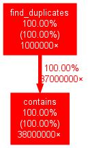

GNU Profiler - gprof¶
gprof - How it Works¶
How does it work?
Compiler inserts hooks into each function ⟶ counts number of calls
Signal handler runs periodically to gather statistic information about each call
$ gcc -pg -c -o program.o program.c
$ gcc -pg -g -c -o program.o program.c # debug info
$ gcc -pg -o program program.o
Running
programcreates a filegmon.outin the current working directoryInterpreted by
gprof
Using gprof¶
$ gprof program gmon.out
...
Prints plenty of information
Flat profile: (sorted) list of functions and their numbers. Good to initially find out about the hot spots.
Call graph: node-by-node listing of call graph
Explanations of both (suppress with
--brief)
gprof: Flat Profile¶
$ gprof --brief --flat-profile program gmon.out
% cumulative self self total
time seconds seconds calls us/call us/call name
89.96 1.02 1.02 38000000 0.03 0.03 contains
9.80 1.13 0.11 1000000 0.11 1.10 find_duplicates
% time: percentage of entire runtime, including called subroutinescumulative seconds: same in secondsself seconds: time consumed by the function alone. The most valuable information ⟶ primary sorting criterioncalls: total number of calls
gprof: Call Graph¶
$ gprof --brief --graph program gmon.out
index % time self children called name
...
-----------------------------------------------
0.11 0.99 1000000/1000000 main [1]
[2] 97.6 0.11 0.99 1000000 find_duplicates [2]
0.99 0.00 37000000/38000000 contains [3]
-----------------------------------------------
...
The
indexline is the center (what the node is about)Lines above: callers
Lines below: callees
3/291: 291 total calls, 3 attributed to one particular caller
gprof: Interpreting The Results¶
Identify hot spots
Flat profile gives the hot spots ⟶ self seconds is the primary criterion
Scripting always possible if more is wanted
Call graph starting at the hot spots
$ gprof --brief --graph -f contains program gmon.out
...
index % time self children called name
0.00 0.00 1000000/38000000 main (6)
0.00 0.00 37000000/38000000 find_duplicates (2)
[1] 0.0 0.00 0.00 38000000 contains [1]
...
gprof: Visualization¶
$ gprof program gmon.out | \
gprof2dot | \
dot -Tjpeg | \
display -
|
 |